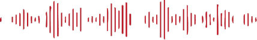
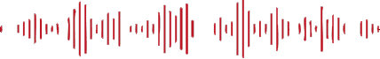

ONOPGELOST:
Het verhaal van Biggie Smalls
Een zogenaamde rap-oorlog tussen hiphopartiesten aan de oost- en westkust, of schuilt daar meer achter? De moord op The Notorious B.I.G. blijft tot op de dag van vandaag een van de bekendste onopgeloste moorden. Eén ding is zeker: vier kogels waren genoeg om Biggie Smalls neer te leggen en de muziekwereld voorgoed te veranderen.
LUISTER NU